eye colors 26 images
 krea 2
krea 2dark brown
a full color close-up studio portrait photograph in three-quarter view, with the face and neck filling the frame in sharp skin detail, lit by a soft diffused key light against a plain warm gray backdrop. the subject is a mixed race woman of about twenty five with light skin. her hair is chestnut brown, long blowout layers. she wears a plain white crew-neck t-shirt. her eyes are dark brown. she is turned three quarters toward the left side of the frame and gazes off to the left side of the frame, away from the camera.
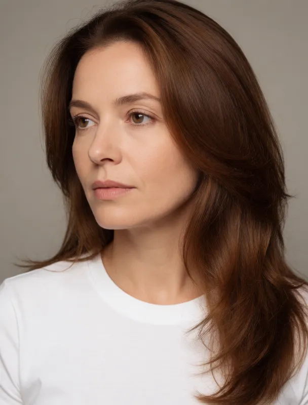
krea 2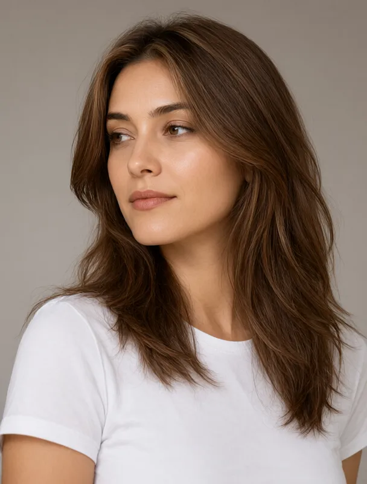
qwen image 2.1light brown
a full color close-up studio portrait photograph in three-quarter view, with the face and neck filling the frame in sharp skin detail, lit by a soft diffused key light against a plain warm gray backdrop. the subject is a mixed race woman of about twenty five with light skin. her hair is chestnut brown, long blowout layers. she wears a plain white crew-neck t-shirt. her eyes are light brown. she is turned three quarters toward the left side of the frame and gazes off to the left side of the frame, away from the camera.
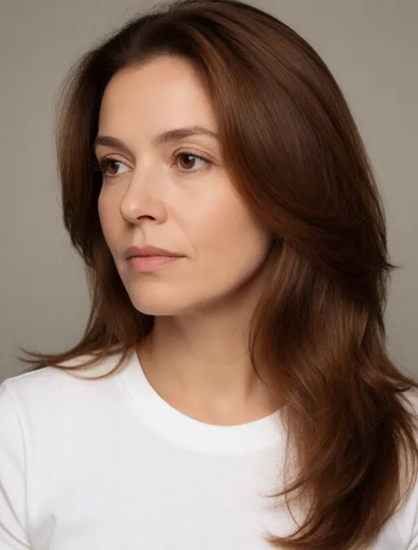
krea 2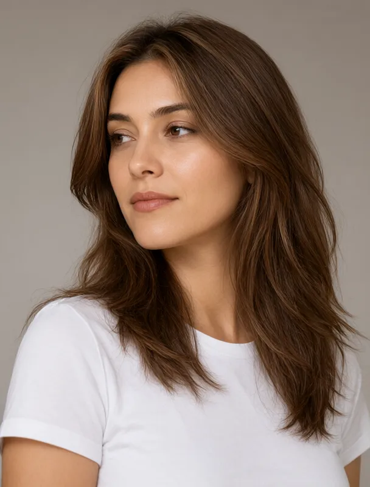
qwen image 2.1medium brown
a full color close-up studio portrait photograph in three-quarter view, with the face and neck filling the frame in sharp skin detail, lit by a soft diffused key light against a plain warm gray backdrop. the subject is a mixed race woman of about twenty five with light skin. her hair is chestnut brown, long blowout layers. she wears a plain white crew-neck t-shirt. her eyes are medium brown. she is turned three quarters toward the left side of the frame and gazes off to the left side of the frame, away from the camera.
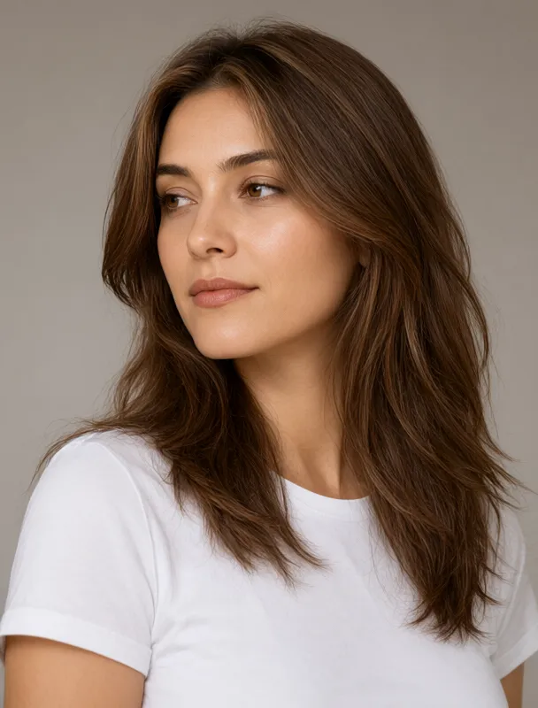
qwen image 2.1amber
a full color close-up studio portrait photograph in three-quarter view, with the face and neck filling the frame in sharp skin detail, lit by a soft diffused key light against a plain warm gray backdrop. the subject is a mixed race woman of about twenty five with light skin. her hair is chestnut brown, long blowout layers. she wears a plain white crew-neck t-shirt. her eyes are amber. she is turned three quarters toward the left side of the frame and gazes off to the left side of the frame, away from the camera.
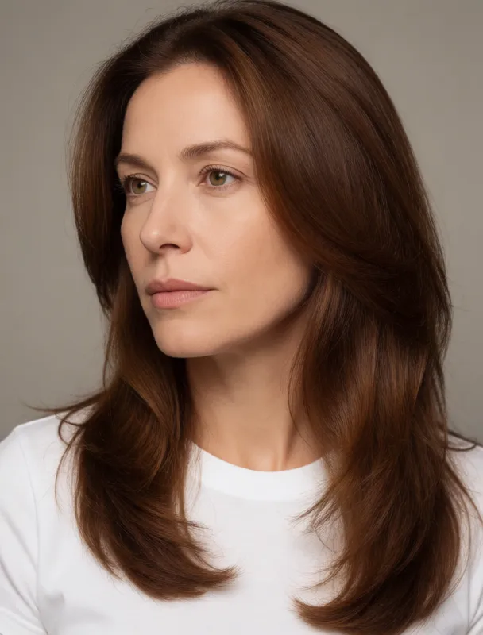
krea 2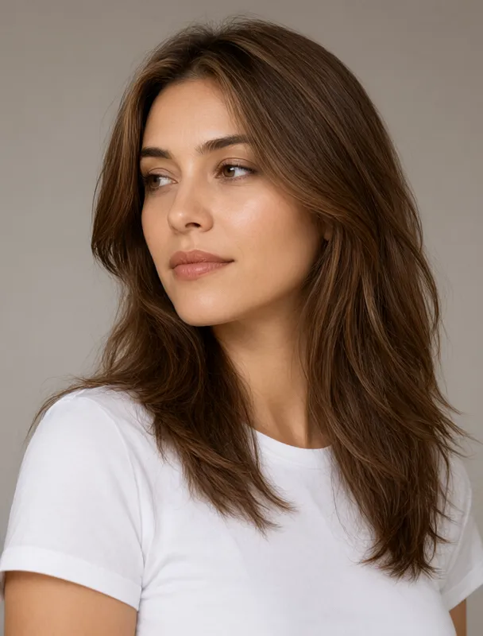
qwen image 2.1hazel
a full color close-up studio portrait photograph in three-quarter view, with the face and neck filling the frame in sharp skin detail, lit by a soft diffused key light against a plain warm gray backdrop. the subject is a mixed race woman of about twenty five with light skin. her hair is chestnut brown, long blowout layers. she wears a plain white crew-neck t-shirt. her eyes are hazel. she is turned three quarters toward the left side of the frame and gazes off to the left side of the frame, away from the camera.
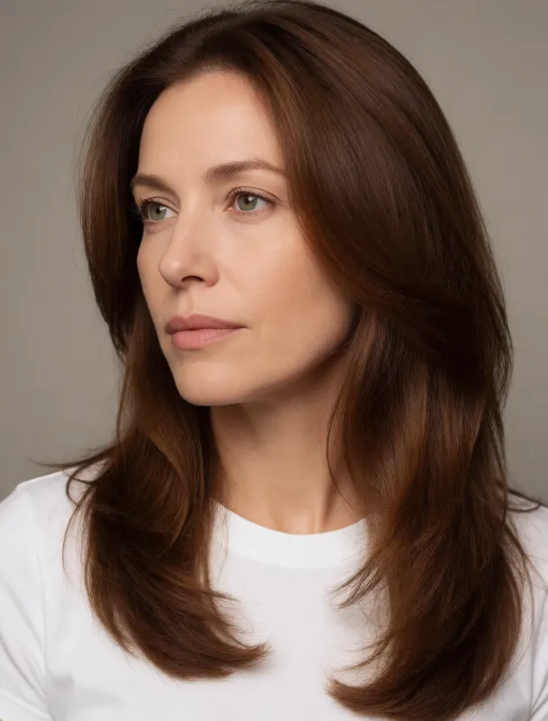
krea 2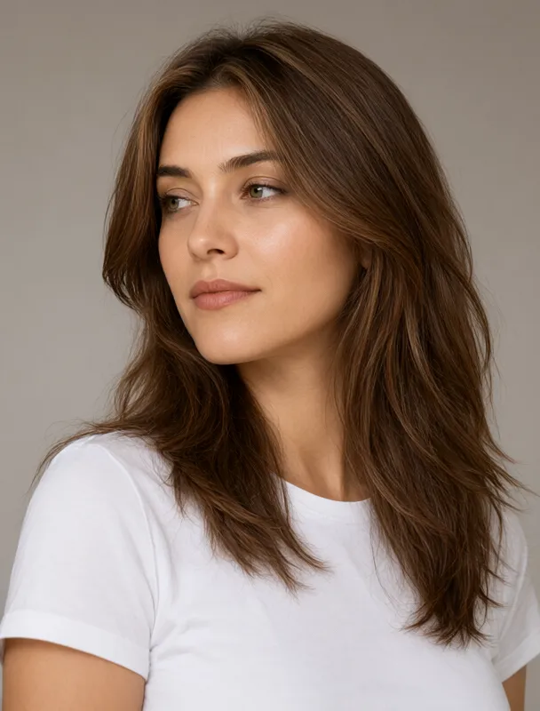
qwen image 2.1green
a full color close-up studio portrait photograph in three-quarter view, with the face and neck filling the frame in sharp skin detail, lit by a soft diffused key light against a plain warm gray backdrop. the subject is a mixed race woman of about twenty five with light skin. her hair is chestnut brown, long blowout layers. she wears a plain white crew-neck t-shirt. her eyes are green. she is turned three quarters toward the left side of the frame and gazes off to the left side of the frame, away from the camera.
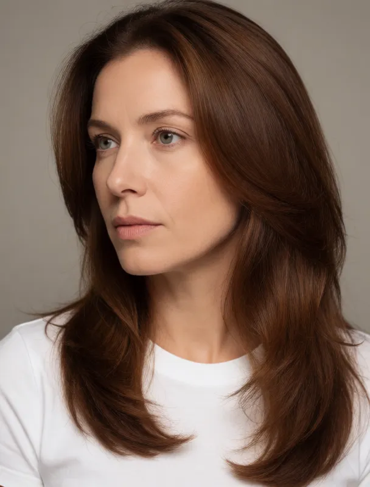
krea 2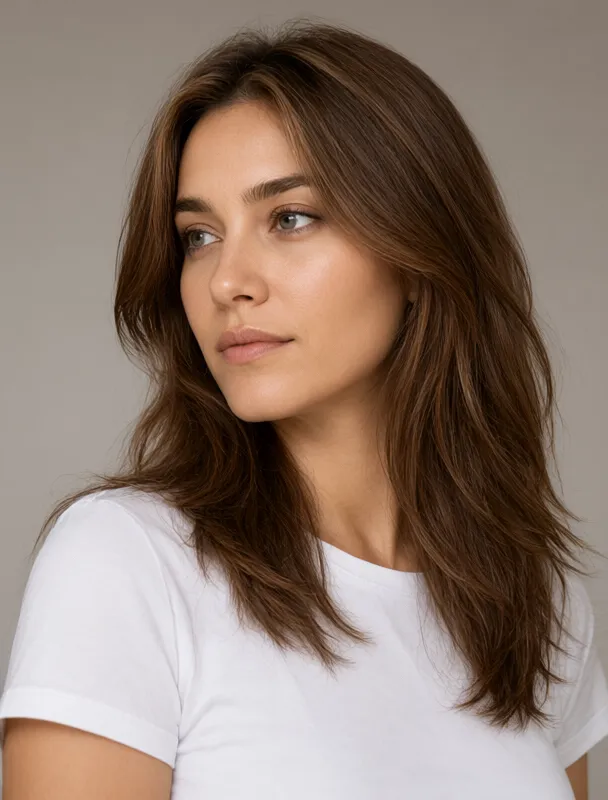
qwen image 2.1gray green
a full color close-up studio portrait photograph in three-quarter view, with the face and neck filling the frame in sharp skin detail, lit by a soft diffused key light against a plain warm gray backdrop. the subject is a mixed race woman of about twenty five with light skin. her hair is chestnut brown, long blowout layers. she wears a plain white crew-neck t-shirt. her eyes are gray-green. she is turned three quarters toward the left side of the frame and gazes off to the left side of the frame, away from the camera.
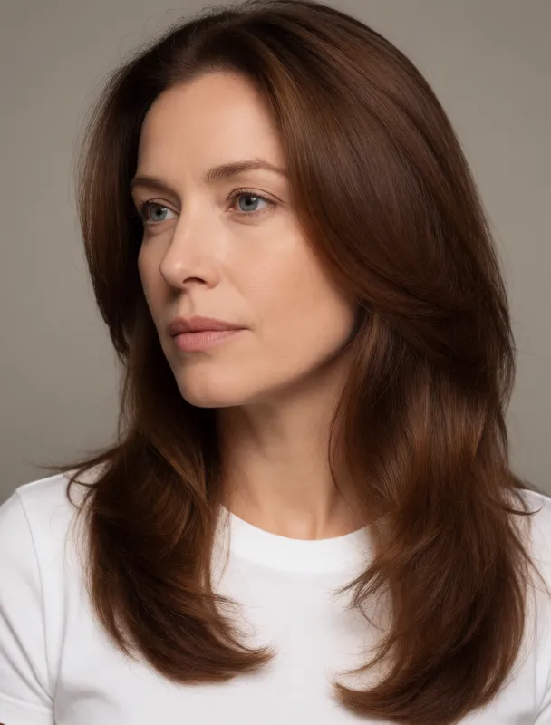
krea 2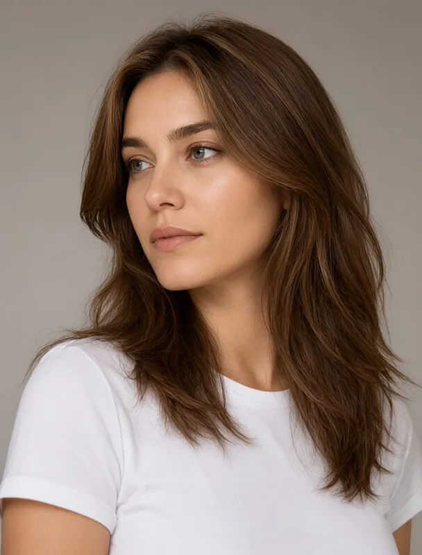
qwen image 2.1blue gray
a full color close-up studio portrait photograph in three-quarter view, with the face and neck filling the frame in sharp skin detail, lit by a soft diffused key light against a plain warm gray backdrop. the subject is a mixed race woman of about twenty five with light skin. her hair is chestnut brown, long blowout layers. she wears a plain white crew-neck t-shirt. her eyes are blue-gray. she is turned three quarters toward the left side of the frame and gazes off to the left side of the frame, away from the camera.
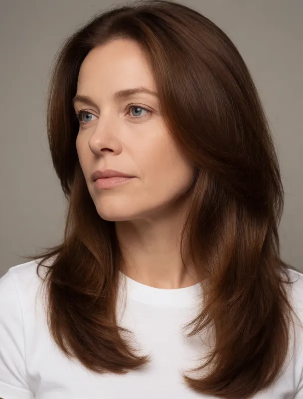
krea 2light blue
a full color close-up studio portrait photograph in three-quarter view, with the face and neck filling the frame in sharp skin detail, lit by a soft diffused key light against a plain warm gray backdrop. the subject is a mixed race woman of about twenty five with light skin. her hair is chestnut brown, long blowout layers. she wears a plain white crew-neck t-shirt. her eyes are light blue. she is turned three quarters toward the left side of the frame and gazes off to the left side of the frame, away from the camera.
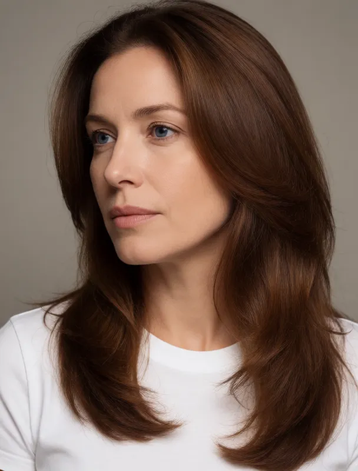
krea 2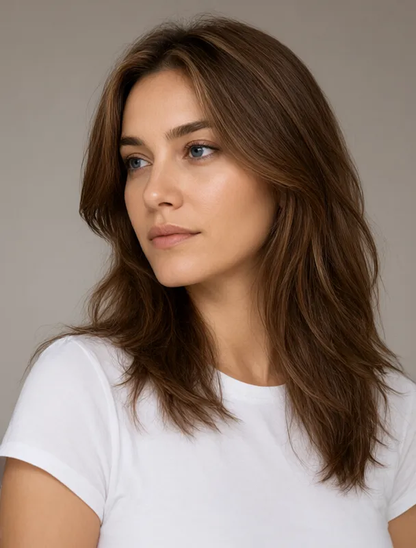
qwen image 2.1deep blue
a full color close-up studio portrait photograph in three-quarter view, with the face and neck filling the frame in sharp skin detail, lit by a soft diffused key light against a plain warm gray backdrop. the subject is a mixed race woman of about twenty five with light skin. her hair is chestnut brown, long blowout layers. she wears a plain white crew-neck t-shirt. her eyes are deep blue. she is turned three quarters toward the left side of the frame and gazes off to the left side of the frame, away from the camera.
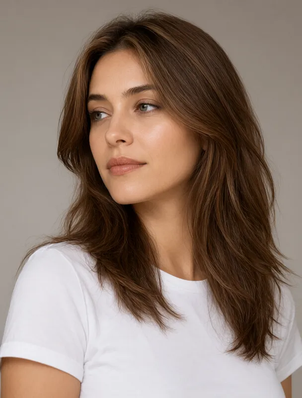
qwen image 2.1gray
a full color close-up studio portrait photograph in three-quarter view, with the face and neck filling the frame in sharp skin detail, lit by a soft diffused key light against a plain warm gray backdrop. the subject is a mixed race woman of about twenty five with light skin. her hair is chestnut brown, long blowout layers. she wears a plain white crew-neck t-shirt. her eyes are gray. she is turned three quarters toward the left side of the frame and gazes off to the left side of the frame, away from the camera.
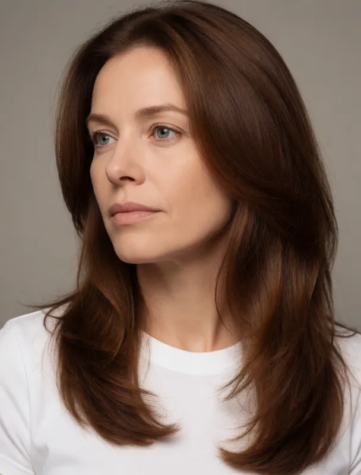
krea 2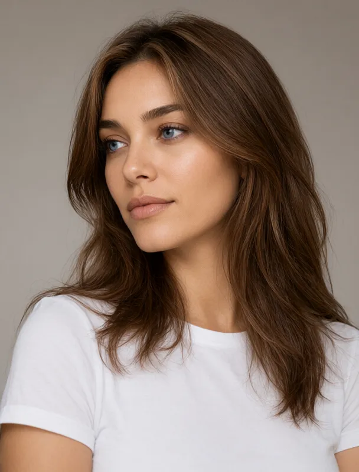
qwen image 2.1heterochromia with one blue eye and one brown eye
a full color close-up studio portrait photograph in three-quarter view, with the face and neck filling the frame in sharp skin detail, lit by a soft diffused key light against a plain warm gray backdrop. the subject is a mixed race woman of about twenty five with light skin. her hair is chestnut brown, long blowout layers. she wears a plain white crew-neck t-shirt. her eyes are heterochromia with one blue eye and one brown eye. she is turned three quarters toward the left side of the frame and gazes off to the left side of the frame, away from the camera.
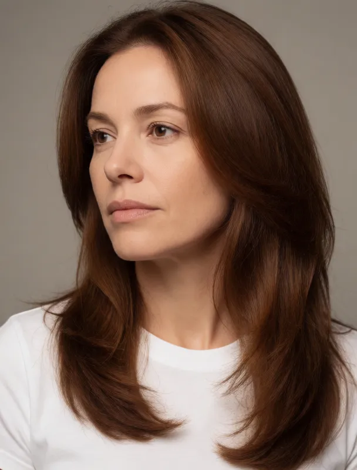
krea 2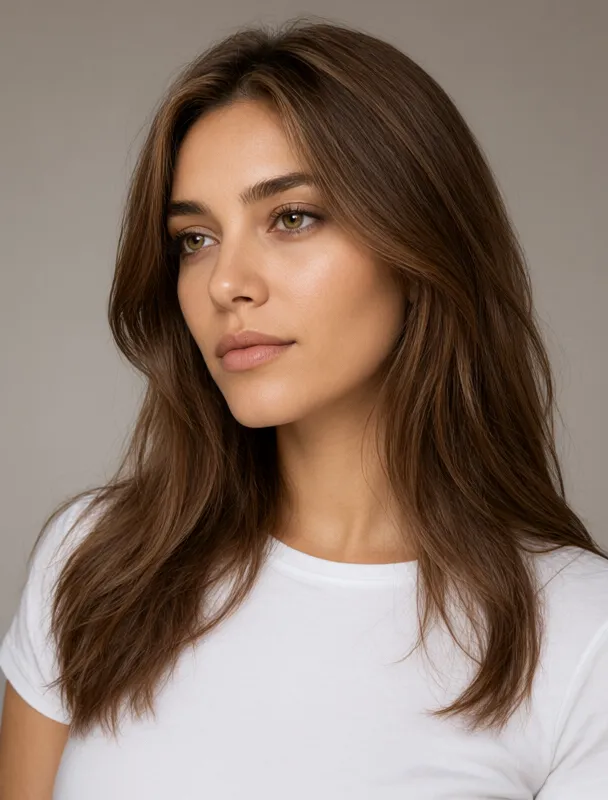
qwen image 2.1central heterochromia with a gold ring around the pupil
a full color close-up studio portrait photograph in three-quarter view, with the face and neck filling the frame in sharp skin detail, lit by a soft diffused key light against a plain warm gray backdrop. the subject is a mixed race woman of about twenty five with light skin. her hair is chestnut brown, long blowout layers. she wears a plain white crew-neck t-shirt. her eyes are central heterochromia with a gold ring around the pupil. she is turned three quarters toward the left side of the frame and gazes off to the left side of the frame, away from the camera.